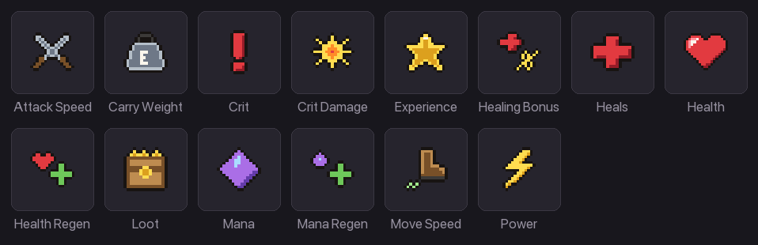
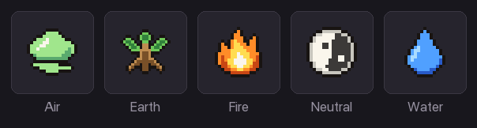
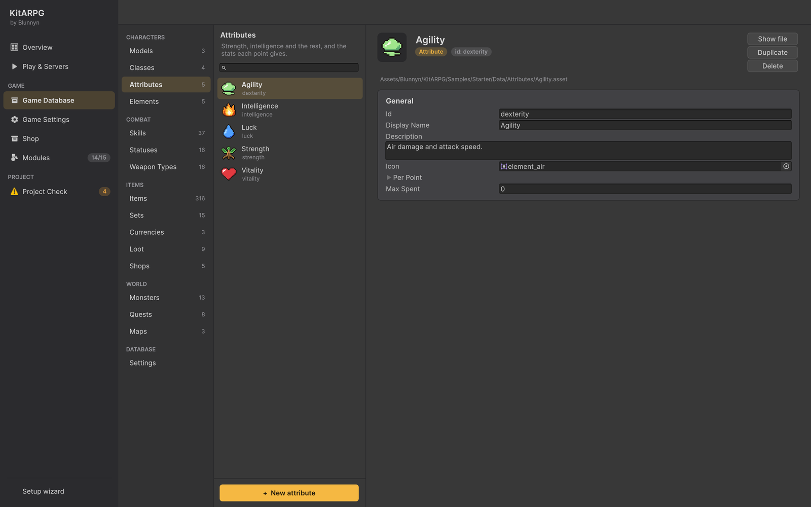

Atributos y stats
Los atributos son los puntos que reparten los jugadores (Strength, Intelligence y similares); las stats son los números que lee el combate (vida, poder, probabilidad de crítico, velocidad de movimiento). Esta página lista cada stat, explica los atributos y los elementos de daño, y muestra paso a paso cómo el kit suma clase, atributos, equipo y buffs en los números finales de un personaje, siempre en números enteros.
Las piezas
- Las stats son un conjunto fijo de números que tiene todo personaje: vida, maná, regeneración, poder, golpes críticos, curación, velocidad de ataque, velocidad de movimiento, peso transportable, ganancia de experiencia y probabilidad de botín.
- Los elementos de daño son tipos de daño, como Fire o Water. Cada personaje tiene, por elemento, una bonificación de daño fija, una resistencia fija y una resistencia porcentual.
- Los atributos son assets. Cada punto de un atributo suma un paquete de stats, daño de elemento y resistencias. Las clases dan puntos de atributo por nivel, los jugadores reparten más, y el equipo puede sumar algunos.
- Los modificadores (
StatModifiers) son ese paquete. Los niveles de clase, los puntos de atributo, el equipo, los sets, las gemas, los estados, los buffs y las skills pasivas usan todos el mismo paquete, así que cualquiera de ellos puede subir cualquier stat, elemento, atributo o rango de skill.
Las stats

Las stats viven en CharacterStats. Las stats porcentuales se guardan como fracciones: 0.05 es 5 %.
| Stat (id) | Se muestra como | Qué hace |
|---|---|---|
Health (maxHealth) |
Número | Vida máxima. |
Mana (maxMana) |
Número | Maná máximo, que gastan las skills. |
Health regen (healthRegen) |
Por segundo | Vida recuperada cada segundo. Consulta Recuperación y muerte para ver cómo se comporta dentro y fuera de combate. |
Mana regen (manaRegen) |
Por segundo | Maná recuperado cada segundo. |
Power (power) |
Porcentaje | Más daño de todos los elementos. 0.1 es +10 % a cada golpe, incluido el daño en el tiempo. |
Critical (critChance) |
Porcentaje | Probabilidad de que un golpe sea crítico. 0.05 es 5 %. |
Crit damage (critDamage) |
Porcentaje | Daño extra en un golpe crítico. 0.5 significa que un crítico hace 150 %. |
Heals (healing) |
Número | Se suma a cada curación que lanza este personaje, antes de la bonificación de curación. |
Heal bonus (healingBonus) |
Porcentaje | Más curación en cada curación que lanza este personaje. 0.1 es +10 %. |
Attack speed (attackSpeed) |
Porcentaje | Multiplica los ataques por segundo del arma. 0.1 es +10 %. |
Move speed (moveSpeed) |
Número | Metros por segundo. |
Carry weight (carryWeight) |
Número | Peso extra que puede cargar el personaje cuando las bolsas se limitan por peso. |
XP gain (experienceGain) |
Porcentaje | Más experiencia de muertes y misiones. 0.1 es +10 %. |
Loot chance (lootChance) |
Porcentaje | Mejores probabilidades para cada ítem que puede soltar una muerte. 0.1 es +10 % de cada probabilidad, así que un botín de 20 % pasa a 22 %. |
No hay stats de armadura, ataque físico ni ataque mágico. La defensa viene de las resistencias por elemento, y el ataque de las tiradas del arma, el daño de elemento y el poder. Cómo se calcula un golpe está en Combate.
Nombres e íconos de las stats
Los nombres de arriba son los predeterminados. Para cambiarle el nombre a una stat o darle un ícono, abre Game Database > Settings y agrega una entrada a Stat Display (statDisplay):
| Campo | Qué hace | Por defecto |
|---|---|---|
Stat (stat) |
El id de la stat, como power o maxHealth. |
Vacío |
Label (label) |
El nombre que ven los jugadores. Vacío conserva el nombre incorporado. | Vacío |
Icon (icon) |
Se muestra en la ventana Character, los tooltips y los efectos de ítems. | Ninguno |
La ventana Character (C) agrupa las stats en secciones: vida y maná; poder, crítico y velocidad de ataque; curación; movimiento y peso transportable; experiencia y botín.
Elementos de daño

Los elementos están en Game Database > Characters > Elements. Crea uno con Create > KitARPG > Damage Element. La muestra tiene Neutral, Earth, Fire, Water y Air.
| Campo | Qué hace | Por defecto |
|---|---|---|
| Id, Display Name, Description, Icon | Como en todo asset de datos del juego. | |
Color (color) |
Color de los números de daño y de las líneas del tooltip de este elemento. También tiñe los efectos marcados Tint. | Blanco |
Max Resistance (maxResistance) |
La resistencia porcentual más alta que cuenta contra este elemento, de 0 a 1. 0.5 significa que un golpe de este elemento nunca se reduce más de la mitad, por mucha resistencia que acumule el defensor. |
0,5 |
Hit Effect (hitEffect) |
Efecto sobre quien recibe un golpe de este elemento, salvo que la skill o el arma tenga el suyo. | Ninguno |
En Game Database > Settings:
| Campo | Qué hace | Por defecto |
|---|---|---|
Elements (elements) |
Los elementos, en el orden en que los lista la ventana Character. | Vacío |
Default Element (defaultElement) |
Se usa donde no hay elemento puesto: una tirada de arma, una bonificación de daño o una resistencia con el elemento vacío cuenta como este. Vacío usa el primero de la lista. | Ninguno |
Default Hit Effect (defaultHitEffect) |
Efecto sobre quien recibe un golpe cuando nada más da uno. | Ninguno |
Para cada elemento, un personaje tiene tres números:
| Número | Qué hace |
|---|---|
| Daño | Se suma a cada golpe de este elemento que da el personaje, antes del poder. |
| Resistencia | Se resta de cada golpe de este elemento que recibe el personaje. |
| Resistencia % | Parte de cada golpe de este elemento que se ignora, hasta el Max Resistance del elemento. |
Atributos

Los atributos están en Game Database > Characters > Attributes. Crea uno con Create > KitARPG > Attribute.
| Campo | Qué hace | Por defecto |
|---|---|---|
| Id, Display Name, Description, Icon | Como en todo asset de datos del juego. El id es la clave bajo la que los personajes guardados almacenan sus puntos repartidos. | |
Per Point (perPoint) |
Lo que suma un punto: un paquete de modificadores completo (ver abajo). Aquí se ignora su lista Attributes: un atributo no puede dar puntos de otro atributo. | Vacío |
Max Spent (maxSpent) |
El máximo de puntos que un jugador puede repartir en este atributo. Los puntos de la clase y del equipo no cuentan para el tope. 0 significa sin límite. |
0 |
La muestra tiene cinco atributos:
| Atributo (id) | Un punto da |
|---|---|
Vitality (vitality) |
+10 de vida, +0,2 de regeneración de vida |
Strength (strength) |
+5 de peso transportable, +0,5 de daño Earth, +0,5 de daño Neutral |
Intelligence (intelligence) |
+4 de maná, +0,08 de regeneración de maná, +0,5 de curación, +0,2 % de ganancia de experiencia, +0,5 de daño Fire |
Luck (luck) |
+0,2 % de crítico, +0,5 % de probabilidad de botín, +0,5 de daño Water |
Agility (dexterity) |
+0,6 % de velocidad de ataque, +0,5 de daño Air |
Agility conserva el id dexterity de cuando se llamaba Dexterity, así que los personajes guardados antes del cambio de nombre conservan sus puntos.
Los valores fraccionarios por punto están bien. Se suman sobre todos los puntos antes de redondear (consulta números enteros), así que 7 puntos de Vitality dan 0.2 × 7 = 1.4, que cuenta como 1 de vida por segundo.
Repartir puntos
Los jugadores ganan Points Per Level puntos de atributo por cada nivel después del primero (se pone en la clase). En la ventana Character (C):
- + junto a un atributo suma un punto pendiente.
Shift+ + suma todos los que caben. - Hacer clic en el atributo abre un selector de cantidad con −, + y MAX. Lo que escribes se mantiene entre 0 y lo que cabe (puntos libres que no estén ya pendientes en otro lado, y el Max Spent del atributo).
- Los puntos pendientes se muestran en verde sobre el total, y Points left baja.
- El botón pasa a ser CONFIRM n. Solo entonces se envían los puntos al servidor. UNDO, o cerrar la ventana, descarta los puntos pendientes.
El servidor revisa cada pedido: que el atributo esté en la base de datos, que el jugador tenga los puntos libres y que no se pase Max Spent.
Los puntos repartidos son permanentes. Solo vuelven con un reinicio: la acción de juego Reset Attributes (para misiones y diálogos; la misión Second Thoughts de la muestra da un reinicio gratis) o un consumible con el efecto de ítem Reset Attributes (el Scroll of Second Thoughts de la muestra). Consulta Efectos de ítems.
El paquete de modificadores
Toda fuente de stats usa este paquete (StatModifiers):
| Campo | Qué hace | Por defecto |
|---|---|---|
Stats (stats) |
Cantidades fijas que se suman a las stats. Las stats porcentuales se escriben como fracciones (0.05 para 5 %). |
Todo 0 |
Stats Percent (statsPercent) |
Porcentaje del total de cada stat, como fracciones. 0.1 en Health es +10 % de la vida total. -0.4 en Move Speed es 40 % más lento. |
Todo 0 |
Damage (damage) |
Daño fijo que se suma a cada golpe de un elemento. Lista de elemento y cantidad; un elemento vacío es el elemento por defecto. | Vacío |
Resistance (resistance) |
Daño fijo que se resta de cada golpe de un elemento. | Vacío |
Resistance Percent (resistancePercent) |
Parte de cada golpe de un elemento que se ignora. 0.1 es 10 %. |
Vacío |
Attributes (attributes) |
Puntos que se suman a los atributos. Se ignora en el Per Point de un atributo. | Vacío |
Skills (skills) |
Rangos que se suman a skills concretas que el personaje aprendió, mientras la fuente cuenta. | Vacío |
All Skills (allSkills) |
Rangos que se suman a todas las skills que aprendió el personaje. | 0 |
Los rangos de skill del equipo solo suben skills que el personaje ya conoce; nunca enseñan una nueva. Aprender y subir con puntos sigue usando el rango aprendido. Consulta Rangos de skill del equipo.
Números enteros
Toda bonificación del kit cuenta en números enteros, y todo porcentaje en puntos porcentuales enteros. Una pieza de equipo da +7 de vida, nunca +7,5, y +3 % de crítico, nunca +3,5 %.
- El redondeo va al entero o al porcentaje entero más cercano; las mitades se alejan de cero (
2.5pasa a3,-2.5pasa a-3). - Cada fuente se redondea por su cuenta antes de sumarse. Un atributo cuenta como una fuente: su Per Point por los puntos, y luego redondeado. Así, 3 puntos de Intelligence a
0.5de curación cada uno dan1.5, que cuenta como 2. - Los campos que siempre son porcentajes (poder, crítico, daño crítico, bonificación de curación, velocidad de ataque, ganancia de experiencia, probabilidad de botín) se redondean a un porcentaje entero incluso en Stats. Luck con 0,2 % de crítico por punto: 12 puntos dan 2,4 %, que cuenta como 2 %.
- Las stats base de la clase son la única excepción: pueden conservar decimales, como una velocidad al caminar de 3,5 metros por segundo. Los totales finales vuelven a ser enteros después de los porcentajes, salvo la velocidad de movimiento, que conserva sus decimales.
- Los tooltips muestran las bonificaciones ya redondeadas, aunque el asset tenga decimales.
Da las bonificaciones de velocidad como porcentaje (Stats Percent > Move Speed), no como cantidad fija. Un +1 metro por segundo fijo es un salto enorme, y cualquier cosa menor se redondea a 0.
Cómo se calculan las stats
El servidor calcula las stats de un personaje cada vez que algo las cambia: entrar a un mapa, subir de nivel, repartir o reiniciar puntos, cambiar el equipo, que un buff llegue o termine, aprender una skill pasiva. Las reglas están en StatFormula, que puedes reemplazar en código (consulta Fórmulas). El orden por defecto es fijo:
- Puntos de atributo de la clase. Para cada entrada de Attributes de la clase, la cantidad en el nivel del personaje, redondeada.
- Puntos repartidos. Los puntos que repartió el jugador, por atributo.
- Puntos de atributo de las fuentes. La lista Attributes de cada fuente: el equipo puesto (con sus valores tirados y su nivel de mejora), las gemas en ese equipo, las bonificaciones de set alcanzadas, los estados y buffs sobre el personaje, y las skills pasivas.
- Stats de la clase. Las Base Stats de la clase más Stats Per Level × (nivel − 1). Pueden conservar decimales.
- Atributos. Para cada atributo, su Per Point por sus puntos totales de los pasos 1 a 3, redondeado como una fuente.
- Fuentes. Las stats fijas, el daño de elemento, las resistencias y los rangos de skill de cada fuente, cada uno redondeado por su cuenta. Las bonificaciones porcentuales de todas las fuentes se suman entre sí.
- Porcentajes. Cada stat crece por la suma de sus bonificaciones porcentuales:
total × (1 + percent). Luego cada stat se redondea a un entero o a un porcentaje entero, salvo la velocidad de movimiento.
Los atributos van primero porque suman stats: un anillo con +5 de Strength también tiene que dar el daño y el peso transportable de esos 5 puntos.
Los máximos de vida y maná son los totales redondeados (la vida, al menos 1). La vida y el maná actuales se quedan donde estaban, recortados al nuevo máximo si bajó.
Un ejemplo resuelto
Un Warrior de nivel 10 con 10 puntos repartidos en Strength, que lleva una pechera cuya copia sacó +6 de Vitality y +30 de vida, y bajo War Cry (+15 % de poder). Para el ejemplo, no lleva nada más.
- Puntos de clase en el nivel 10: Vitality
7 + 2 × 9 = 25, Strength8 + 2 × 9 = 26, Intelligence2 + 0.5 × 9 = 6.5, redondeado a7, Luck3 + 0.5 × 9 = 7.5, redondeado a8, Agility4 + 1 × 9 = 13. - Puntos repartidos: Strength
26 + 10 = 36. - Puntos de atributo de las fuentes: la pechera da +6 de Vitality, así que Vitality es
25 + 6 = 31. - Stats de la clase: vida
90 + 14 × 9 = 216, maná20 + 2 × 9 = 38, velocidad de movimiento3.5, daño crítico0.5. - Atributos, cada uno redondeado como una fuente:
- Vitality 31: vida
+310, regeneración de vida0.2 × 31 = 6.2, que cuenta como6. - Strength 36: peso transportable
+180, daño Earth+18, daño Neutral+18. - Intelligence 7: maná
+28, regeneración de maná0.56, que cuenta como1, curación3.5, que cuenta como4, ganancia de experiencia1.4%, que cuenta como1%, daño Fire3.5, que cuenta como4. - Luck 8: crítico
1.6%, que cuenta como2%, probabilidad de botín4%, daño Water4. - Agility 13: velocidad de ataque
7.8%, que cuenta como8%, daño Air6.5, que cuenta como7.
- Vitality 31: vida
- Fuentes: la pechera suma +30 de vida; War Cry suma +15 % de poder (es una cantidad fija sobre una stat porcentual, así que suma 0,15 al poder).
- Porcentajes: ninguna de las fuentes tiene una bonificación Stats Percent, así que nada crece. La vida termina en
216 + 310 + 30 = 556, el maná en38 + 28 = 66, el poder en 15 %, el crítico en 2 % y el daño crítico en 50 %.
Si el mismo personaje también tuviera una bonificación de set de +8 % de vida (Stats Percent), el paso 7 haría la vida 556 × 1.08 = 600.48, redondeada a 600.
La ventana Character muestra el resultado: los atributos con sus totales, las stats en secciones, y una tabla de daño, resistencia y resistencia porcentual por elemento.
Un jugador y MMO
Las reglas son las mismas en los dos modos y solo corren en el servidor: el servidor de mapa en MMO, el propio juego en un jugador. El cliente nunca calcula sus propias stats. Después de cada recálculo, el servidor le envía al dueño las stats finales y el total de cada atributo; los demás jugadores solo ven las barras de vida.
Los personajes guardan solo los puntos que repartió el jugador, como una lista de id de atributo y cantidad: en la columna Attributes de la base de datos en MMO (jsonb en PostgreSQL), dentro del JSON del personaje en un jugador. Los puntos de clase y las bonificaciones del equipo nunca se guardan; se calculan otra vez al cargar. Así, rebalancear una clase o un atributo cambia todos los personajes existentes a la vez.
En MMO, Login crea los personajes nuevos sin Unity, así que lee la vida y el maná de nivel 1 de cada clase desde gamedata.json. Expórtalo otra vez después de cambiar las stats base (Play & Servers lo hace al iniciar los servicios; KitARPG > Export Game Data for Services para las builds).
Consejos
- Dale a cada atributo una tarea clara y un elemento. Los jugadores entienden "Intelligence es fuego y maná" al instante.
- Deja Max Spent en 0 salvo que quieras topes fijos; los topes hacen imposibles algunas builds.
- Las resistencias de elemento son fuertes porque se acumulan con la resistencia porcentual. Mantén Max Resistance en 0,5 o menos para los elementos contra los que los jugadores pelearán mucho.
Errores comunes
- Una bonificación de 0,4 no hace nada. Se redondea a 0. Usa un número entero, o un porcentaje más grande.
- Una velocidad de ataque de 10 hace los ataques absurdamente rápidos. Las stats porcentuales son fracciones en Stats: 10 % es
0.1. - Se renombró un atributo y los personajes perdieron sus puntos. Cambió el id. Vuelve a poner el id viejo; el Display Name lo puedes cambiar libremente.
- El equipo sube una skill que el personaje no conoce, y no pasa nada. Los rangos de skill del equipo solo se aplican a skills aprendidas.